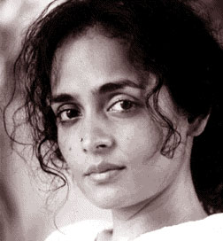

|
|

ارونداتی روی، فمینیست، اکتیویست و نویسنده نام آشنای هندی به کمپین " یک میلیون امضا" پیوست
دو شنبه29 آبان 1385
ارونداتی روی(Arundhati Roy) اکتیویست، فمینیست و نویسنده نام آشنای هندی به کمپین " یک میلیون امضا برای تغییر قوانین تبعیض آمیز" پیوست.
وی یکی از برجسته ترین چهره های روشنفکری جهان امروز است که در کمپین های ضد جنگ، ضد جهانی سازی و اعتراض به سیاست های دولت آمریکا همواره نقش و حضوری موثر و پررنگ داشته است.
رمان " خدای چیزهای کوچک" که وی در سال 1997 به رشته تحریر در آورد، برنده جایزه معتبر " بوکر" نیز شده است. اما ارونداتی روی این جایزه را پس از اینکه دولت های انگلیس و آمریکا در سال 2001 به افغانستان حمله کردند، پس داده و متذکر شد که هرگز زیر بار قبول چنین جایزه ای از سوی کشوری که دولتش به دیگر کشورها یورش برده و این کشورها را تحت اشغال نظامی در می آورد، نخواهد رفت.
این فمینیست و اکتیویست برجسته، در دیدار با شیرین عبادی، برنده جایزه صلح نوبل و از اعضای کمپین " یک میلیون امضا برای تغییر قوانین تبعیض آمیز" اعلام حمایت و همبستگی خود با این حرکت مدنی برابر خواهانه جمعی از زنان ایرانی اعلام کرده و بیانیه این کمپیین را امضا نمود.
از دیگر آثار وی می توان کتاب های " پایان تصور" ، " سیاست قدرت" و " گفتمان جنگ" نام برد.